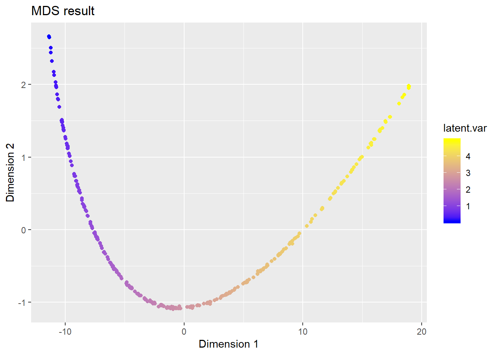
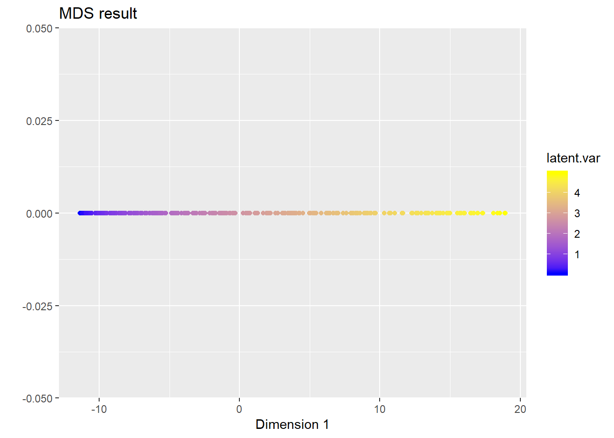

Last updated: 2019-06-19
Checks: 7 0
Knit directory: stats-topics/
This reproducible R Markdown analysis was created with workflowr (version 1.4.0). The Checks tab describes the reproducibility checks that were applied when the results were created. The Past versions tab lists the development history.
Great! Since the R Markdown file has been committed to the Git repository, you know the exact version of the code that produced these results.
Great job! The global environment was empty. Objects defined in the global environment can affect the analysis in your R Markdown file in unknown ways. For reproduciblity it’s best to always run the code in an empty environment.
The command set.seed(20190616) was run prior to running the code in the R Markdown file. Setting a seed ensures that any results that rely on randomness, e.g. subsampling or permutations, are reproducible.
Great job! Recording the operating system, R version, and package versions is critical for reproducibility.
Nice! There were no cached chunks for this analysis, so you can be confident that you successfully produced the results during this run.
Great job! Using relative paths to the files within your workflowr project makes it easier to run your code on other machines.
Great! You are using Git for version control. Tracking code development and connecting the code version to the results is critical for reproducibility. The version displayed above was the version of the Git repository at the time these results were generated.
Note that you need to be careful to ensure that all relevant files for the analysis have been committed to Git prior to generating the results (you can use wflow_publish or wflow_git_commit). workflowr only checks the R Markdown file, but you know if there are other scripts or data files that it depends on. Below is the status of the Git repository when the results were generated:
working directory clean
Note that any generated files, e.g. HTML, png, CSS, etc., are not included in this status report because it is ok for generated content to have uncommitted changes.
These are the previous versions of the R Markdown and HTML files. If you’ve configured a remote Git repository (see ?wflow_git_remote), click on the hyperlinks in the table below to view them.
| File | Version | Author | Date | Message |
|---|---|---|---|---|
| Rmd | bd57b3e | Zhengyang Fang | 2019-06-19 | wflow_publish(“MDS.Rmd”) |
| html | 7d7c29d | Zhengyang Fang | 2019-06-19 | Build site. |
| Rmd | 2f596e7 | Zhengyang Fang | 2019-06-19 | wflow_publish(“MDS.Rmd”) |
| html | fdab8c8 | Zhengyang Fang | 2019-06-18 | Build site. |
| Rmd | 2ab538b | Zhengyang Fang | 2019-06-18 | wflow_publish(“MDS.Rmd”) |
Reference: Cox and cox, 2001
Dimensional reduction to preserve the pairwise distance, or equivalently, to preserve the inner-product matrix for centered data. We assume the data are from a low-dimensional embedding in the high-dimensional space.
Given the distance matrix \(\textbf D\in\mathbb R^{N\times N}\), where \(N\) is the number of data, the element \(\textbf D_{ij}\) is the distance from observation \(\textbf x_i\) to \(\textbf x_j\).
Assume the dimension of the observation is \(d\), i.e. \(\textbf x_i\in\mathbb R^d\). Our goal is to reduce the dimension to \(d^{\prime}\), where \(d^{\prime}<d\). We assume the coordinates of the data in the low-dimensional space \(\mathbb R^{d^{\prime}}\) to be \(\textbf Z\), and \(\textbf Z\in \mathbb R^{N\times d^\prime}\). Then (the transpose of) the i-th row of \(\textbf Z\), \(\textbf z_i\), will be the new coordinate of sample \(\textbf x_i\). Without losing generality, we can assume the new coordinates are centered at the origin, i.e. \(\textbf Z\) is column-centered.
Let the inner-product matrix \(\textbf B=\textbf Z\textbf Z^T\in \mathbb R^{N\times N}\), then the pairwise distance in the low-dimensional space between \(\textbf z_i\) and \(\textbf z_j\)
\[ dist_{ij}^2=\|\textbf z_i-\textbf z_j\|^2_2=\|\textbf z_i\|_2^2+\|\textbf z_j\|_2^2-2\textbf z_i^T \textbf z_j=\textbf B_{ii}+\textbf B_{jj}-2\textbf B_{ij}. \]
Since \(\textbf Z\) is column-centered, then we have
\[ \begin{aligned} \sum_{i=1}^Ndist_{ij}^2&=\sum_{i=1}^N\textbf B_{ii}+N\textbf B_{jj}-2\sum_{i=1}^N\textbf B_{ij}\\ &=trace(\textbf B)+N\textbf B_{jj}-2\sum_{i=1}^N\textbf z_{i}^T\textbf z_j\\ &=trace(\textbf B)+N\textbf B_{jj}-2\left(\sum_{i=1}^N\textbf z_{i}\right)^T\textbf z_j\\ &=trace(\textbf B)+N\textbf B_{jj}. \end{aligned} \]
Similarly
\[ \sum_{j=1}^Ndist_{ij}^2=trace(\textbf B)+N\textbf B_{ii}. \]
And
\[ \sum_{i=1}^N\sum_{j=1}^Ndist_{ij}^2=\sum_{i=1}^N(trace(\textbf B)+N\textbf B_{ii})=2N\cdot trace(\textbf B). \]
Let
\[ dist_{i\cdot}^2=\frac1N\sum_{j=1}^Ndist_{ij}^2,~dist_{\cdot j}^2=\frac1N\sum_{i=1}^Ndist_{ij}^2,~dist_{\cdot\cdot}^2=\frac1{N^2}\sum_{i=1}^N\sum_{j=1}^Ndist_{ij}^2. \]
Hence,
\[ \begin{aligned} \textbf B_{ij}&=\frac12\left(\textbf B_{ii}+\textbf B_{jj}-dist_{ij}^2\right)\\ &=\frac12\left(dist_{i\cdot}^2-trace(\textbf B)+dist_{\cdot j}^2-trace(\textbf B)-dist_{ij}^2\right)\\ &=-\frac12\left(dist_{\cdot\cdot}^2-dist_{i\cdot}^2-dist_{\cdot j}^2+dist_{ij}^2\right). \end{aligned} \]
From the steps above we can see that, we can recover the inner-product matrix \(\textbf B\) using only the distance matrix \(\textbf D\). For any given distance matrix \(\textbf D\), we can calculate \(\textbf B\) as above. Our goal is to choose \(\hat{\textbf Z}\) s.t. \(\hat {\textbf B}=\hat{\textbf Z}\hat{\textbf Z}^T\) can approximate \(\textbf B\).
Since \(\hat{\textbf Z}\in \mathbb R^{N\times d^{\prime}}\). We can see that the rank of \(\hat{\textbf B}=\hat{\textbf Z}\hat{\textbf Z}^T\) is at most \(d^\prime\). We can find the best rank-\(d^\prime\) approximation with eigen decomposition.
As we reduce the dimension of the data to \(d^\prime\), a natural question is, how good is our \(d^\prime\)-dimensional approximation? Stress (Kruskal 1964) is one of the measurement. It measures the closeness between the original pairwise distance and the fitted pairwise distance. Let \(d_{ij}\) denote the distance between observation \(\textbf x_i\) and \(\textbf x_i\), and \(\hat d_{ij}\) denote their distance in the low-dimensional space. Then we define
\[ Stress = \sqrt{\frac{\sum_k\sum_{i<k}(d_{ik}-\hat d_{ik})^2}{\sum_k\sum_{i<k}d_{ik}^2}}. \]
An alternative measurement is SStress
\[ SStress = \sqrt{\frac{\sum_k\sum_{i<k}(d_{ik}^2-\hat d_{ik}^2)^2}{\sum_k\sum_{i<k}d_{ik}^4}}. \]
Normally \(Stress<0.1\) or \(SStress<0.1\) can imply a good fit.
set.seed(1)
library(ggplot2)
library(plotly)
N <- 300 # number of observation
p <- 3 # dimension of observation
# generate data, a curve in R^3 space
# with a 1-dimensional structure
latent.var <- runif(N, max = 5)
X <- matrix(0, nrow = N, ncol = p)
X[, 1] <- latent.var * 2 + rnorm(100, sd = 0.01)
X[, 2] <- latent.var * 3 + rnorm(100, sd = 0.01)
X[, 3] <- latent.var ^ 2 + rnorm(100, sd = 0.01)
# see the observation plot below
plot_ly(x = X[, 1], y = X[, 2], z = X[, 3],
type = "scatter3d", mode = "markers", color = latent.var)# calculate the distance matrix
D <- dist(X)
# run built-in function for MDS
# reduce to R^2 space
Z <- cmdscale(D, k = 2)
ggplot(data = data.frame(z1 = Z[, 1], z2 = Z[, 2]), aes(x = z1, y = z2)) +
geom_point(aes(colour = latent.var)) +
scale_colour_gradient(low = 'blue', high = 'yellow') +
ggtitle("MDS result") + xlab("Dimension 1") + ylab("Dimension 2")
| Version | Author | Date |
|---|---|---|
| 7d7c29d | Zhengyang Fang | 2019-06-19 |
# reduce to R^1 space
Z <- cmdscale(D, k = 1)
ggplot(data = data.frame(z1 = Z[, 1], z2 = rep(0, N)), aes(x = z1, y = z2)) +
geom_point(aes(colour = latent.var)) +
scale_colour_gradient(low = 'blue', high = 'yellow') +
ggtitle("MDS result") + xlab("Dimension 1") + ylab("")
We can see that, MDS successfully recovers the low-dimensional structure in the data.
sessionInfo()R version 3.6.0 (2019-04-26)
Platform: x86_64-w64-mingw32/x64 (64-bit)
Running under: Windows 10 x64 (build 17134)
Matrix products: default
locale:
[1] LC_COLLATE=English_United States.1252
[2] LC_CTYPE=English_United States.1252
[3] LC_MONETARY=English_United States.1252
[4] LC_NUMERIC=C
[5] LC_TIME=English_United States.1252
attached base packages:
[1] stats graphics grDevices utils datasets methods base
other attached packages:
[1] plotly_4.9.0 ggplot2_3.1.1
loaded via a namespace (and not attached):
[1] Rcpp_1.0.1 later_0.8.0 compiler_3.6.0
[4] pillar_1.4.1 git2r_0.25.2 plyr_1.8.4
[7] workflowr_1.4.0 tools_3.6.0 digest_0.6.19
[10] viridisLite_0.3.0 jsonlite_1.6 evaluate_0.14
[13] tibble_2.1.3 gtable_0.3.0 pkgconfig_2.0.2
[16] rlang_0.3.4 shiny_1.3.2 crosstalk_1.0.0
[19] yaml_2.2.0 xfun_0.7 httr_1.4.0
[22] withr_2.1.2 stringr_1.4.0 dplyr_0.8.1
[25] knitr_1.23 fs_1.3.1 htmlwidgets_1.3
[28] rprojroot_1.3-2 grid_3.6.0 tidyselect_0.2.5
[31] glue_1.3.1 data.table_1.12.2 R6_2.4.0
[34] rmarkdown_1.13 tidyr_0.8.3 purrr_0.3.2
[37] magrittr_1.5 whisker_0.3-2 promises_1.0.1
[40] backports_1.1.4 scales_1.0.0 htmltools_0.3.6
[43] assertthat_0.2.1 xtable_1.8-4 mime_0.7
[46] colorspace_1.4-1 httpuv_1.5.1 labeling_0.3
[49] stringi_1.4.3 lazyeval_0.2.2 munsell_0.5.0
[52] crayon_1.3.4